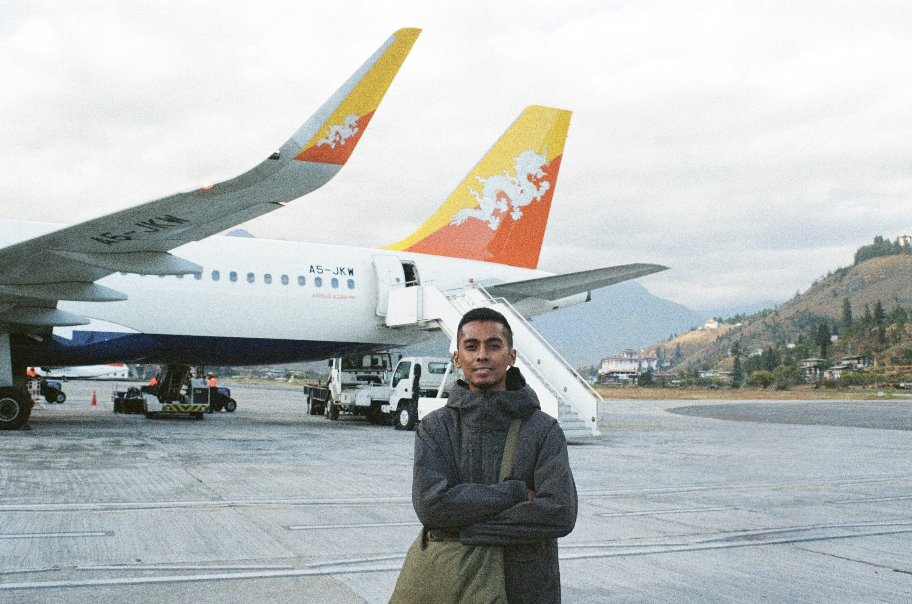
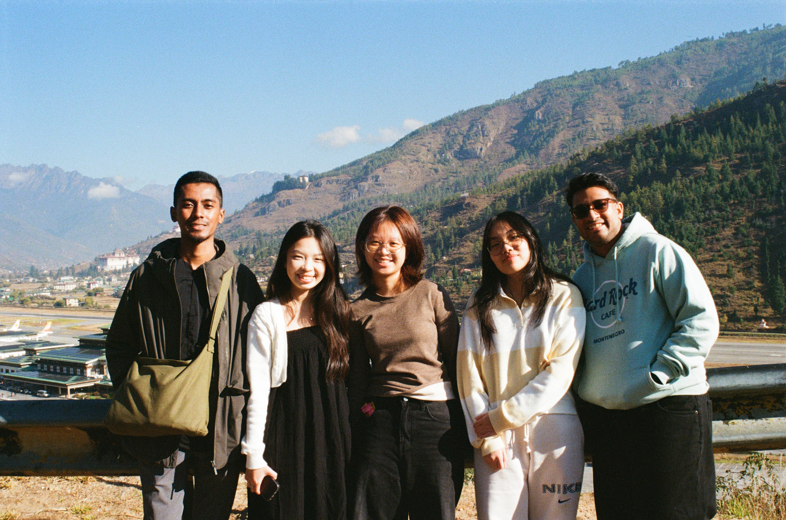
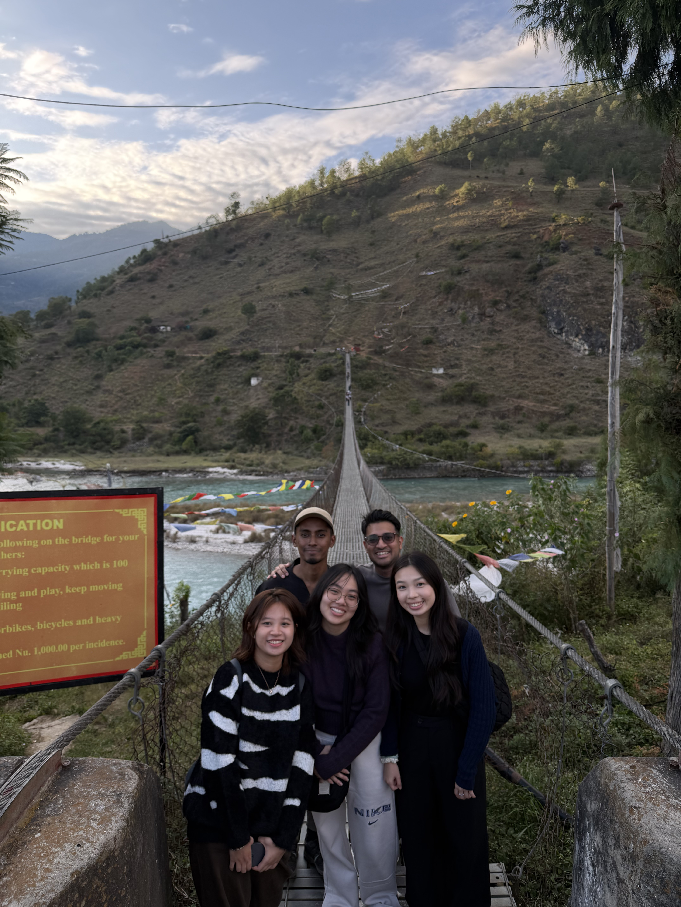
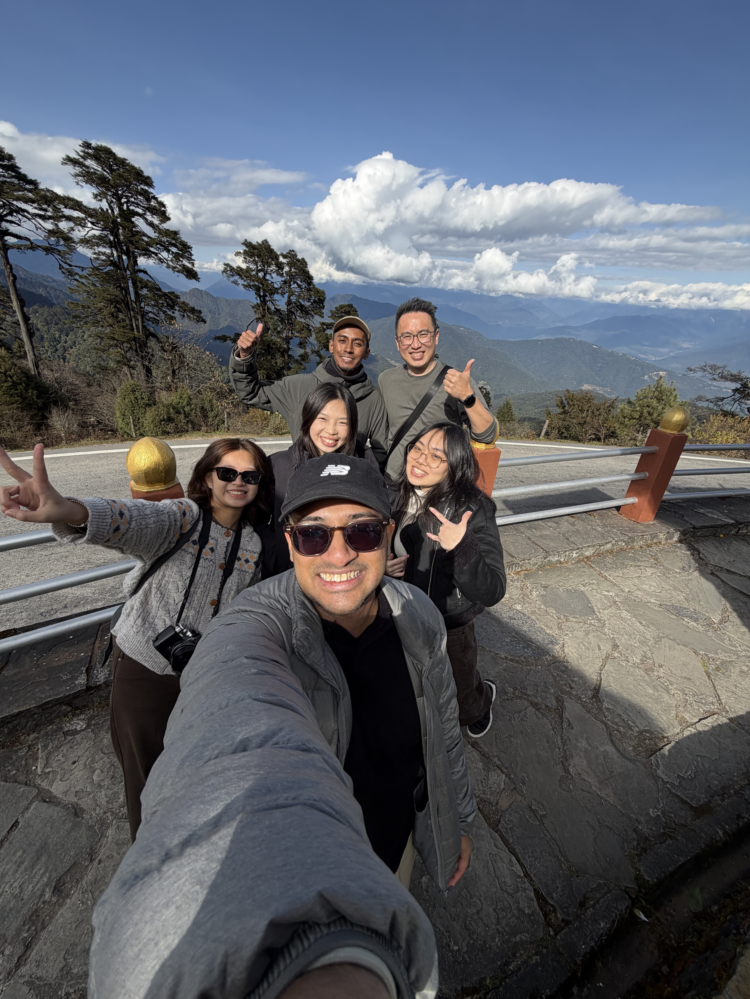
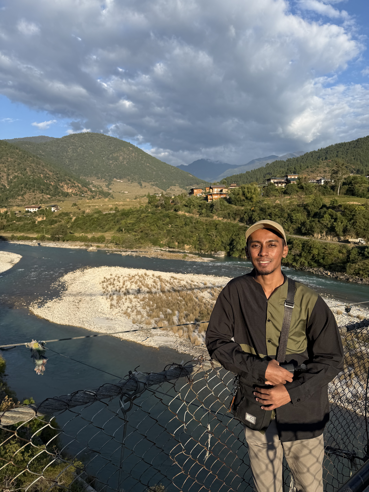
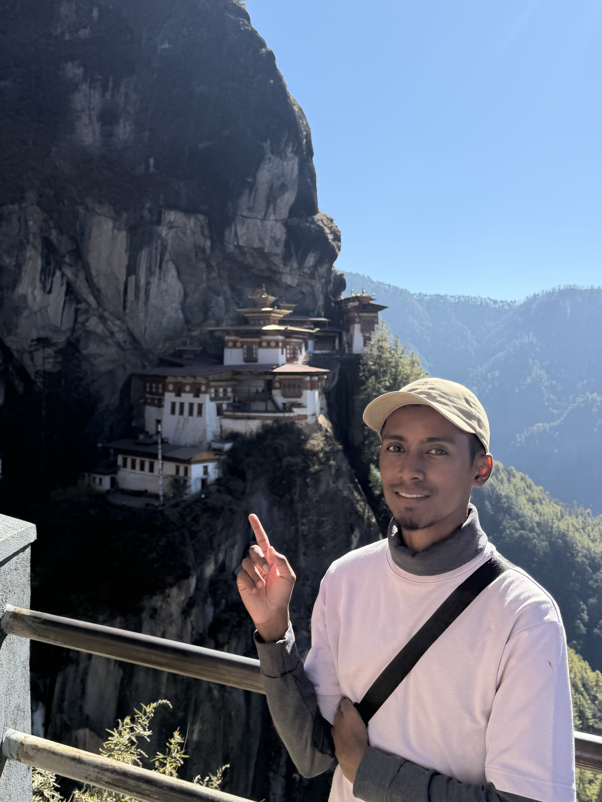
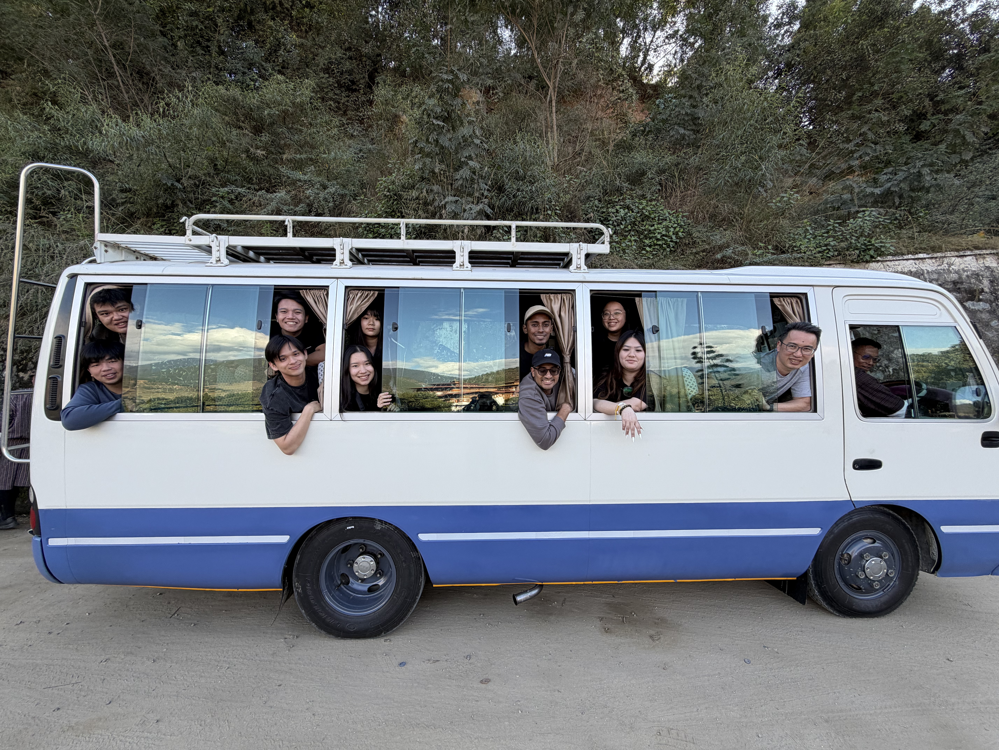

Building foundations
Developing my understanding of core business and supply-chain concepts while building early academic, communication and analytical skills.
Supply ChainBusinessCommunication
SUSS · SUPPLY CHAIN & MARITIME
Connecting learning, developing capabilities, shaping my future.
SUSS • SUPPLY CHAIN MANAGEMENT • YEAR 3
Connecting learning, developing capabilities and shaping my future in the supply chain and maritime industry.
01 / MY JOURNEY
My SUSS experience has gradually brought together supply chain, maritime, analytics, digital technology and interdisciplinary learning.
Developing my understanding of core business and supply-chain concepts while building early academic, communication and analytical skills.
Going deeper into logistics, procurement and maritime management while increasingly using data, digital technologies and applied problem-solving.
Connecting my academic learning across disciplines and developing a clearer sense of the professional capabilities I want to carry forward.
02 / VALUES, SKILLS & KNOWLEDGE
These three VSKs best represent the development I want to reflect on across my SUSS journey.
Seeing the bigger picture.
NIE351 and my Bhutan experience taught me to approach complex trade and development issues through economic, environmental, cultural, political/legal and technological perspectives.
Read the reflection →Using technology to create, analyse and communicate.
My digital development spans multimedia and video editing, Python, data mining, digital twins, AI and workflow tools.
Read the reflection →Evaluating evidence, challenging assumptions and deciding.
Modules such as LOG307, SCM353, LOG304, ANL303 and MTM231 have strengthened my approach to structured analysis and decision-making.
Read the reflection →03 / FEATURED EXPERIENCE • NIE351
My NIE351 journey became the strongest example of how interdisciplinary learning, digital storytelling and critical thinking came together in one real-world experience.

Before the trip, I viewed Bhutan through an idealised understanding of Gross National Happiness. I expected a place where happiness, environmental protection and ethical trade would naturally translate into everyday life.
The trip gave me a more nuanced view. Hydropower showed the importance of economic realities and international dependence, while the CSI market and Dezo paper industry showed how cultural identity can be valued even when commercial scale is limited.
Our pre-trip work focused on hydropower and Dezo paper as contrasting examples: one large-scale and technologically advanced, the other small-scale and heritage-based. The post-trip presentation then tested those expectations against what we observed on the ground.
Professor feedback: our work was recognised for research depth, clarity of argument, interdisciplinary synthesis and mature critical thinking.
FIELD EVIDENCE







04 / EXPERIENCES
Selected experiences that help explain not only what I studied, but how my thinking developed.
VSK 01 • INTERDISCIPLINARY THINKING
For NIE351, my group examined Bhutan's hydropower and Dezo paper trade. We considered economic, environmental, cultural, political/legal and technological perspectives rather than treating trade as only an economic or operational issue.
“Real-world challenges are rarely one-dimensional.”
VSK 02 • DIGITAL LITERACY
My digital literacy developed across different forms of technology. NCO101 and NIE351 helped me improve video editing and digital storytelling, while later modules expanded my capability into Python, data mining, digital twins and AI workflows.
Digital literacy is not only knowing tools; it is knowing how to use them purposefully.
PART 2 • DIGITAL LITERACY EVIDENCE
I selected evidence from modules that show a progression from creating digital content to analysing data, modelling systems and using AI.
Used digital media to communicate our group's community-engagement work and present ideas in an accessible format.
Edited a Bhutan fieldwork video to turn observations and learning into a concise visual narrative.
Developed practical experience using Python and analytical techniques to work with data.
Built and worked with a digital-twin simulation model to represent logistics and container-flow processes.
A- MODULE RESULTApplied data-mining techniques to explore patterns, prepare data and support analytical decision-making.
Developed experience using AI tools and workflows to support academic and project work.
HOW MY MODULES CONNECT
My VSKs were not developed through one module alone. They emerged through repeated application across different learning contexts.
| Module | Interdisciplinary | Digital | Critical Thinking | Evidence |
|---|---|---|---|---|
| NIE351 | ●●● | ●● | ●●● | Bhutan fieldwork, presentations, video |
| ANL252 | ● | ●●● | ●● | Python and analytics |
| LOG365 | ●● | ●●● | ●● | Digital Twin simulation |
| ANL303 | ● | ●●● | ●●● | Data mining and analysis |
| AAI101 | ● | ●●● | ●● | AI tools and workflows |
| MTM231 | ●●● | ● | ●●● | Maritime business analysis |
| SCM353 | ●● | ●● | ●●● | DMAIC and process improvement |
SELECTED DIGITAL ARTEFACTS
These two videos show the multimedia side of my digital literacy development.
Edited to communicate the team's field observations and learning from Bhutan.
Our team produced an informative video to support community engagement around our chosen SDGs.
VSK 03 • CRITICAL THINKING
Across procurement, optimisation, Lean Six Sigma, data mining and maritime studies, I developed a more structured approach to analysing problems. A recurring lesson has been that a problem can look simple until the assumptions behind it are examined.
05 / REFLECTION
Each capability supports a different part of how I approach complex work.
See the bigger picture and recognise different perspectives.
Use technology and data to investigate and communicate.
Evaluate information, challenge assumptions and make reasoned decisions.
Understand → Investigate → Decide
My SUSS journey has changed the way I define capability. I am not only learning supply-chain concepts; I am learning how to connect perspectives, use digital tools with purpose and question assumptions before making decisions. These three VSKs now form part of the professional identity I want to carry into the supply chain and maritime industry.
06 / SHOWCASE
The final portfolio will use selected artefacts to demonstrate development, application and reflection.
07 / FUTURE ASPIRATIONS
I see myself contributing to the supply chain and maritime industry, in an environment where operations, technology, data, people and global trade intersect.
MY SUSS JOURNEY
From classroom learning to fieldwork, from creating media to analysing data, my SUSS journey has shaped how I understand problems and how I want to contribute to the supply chain and maritime industry.
Back to top ↑